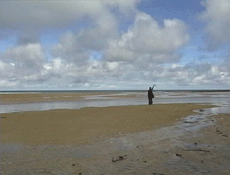

|
CORA PIANTONI
SEESTÜCK | D 2005 | Loop
Format: DVD
Kamera: Cora Piantoni
Ton: Cora Piantoni
Eine Gestalt steht am Strand und winkt in Richtung Meer. Es gibt keinen im Bild ersichtlichen Grund für diese Tätigkeit. Möglicherweise ist gerade ein Schiff vorbeigefahren oder wird vorbeifahren. Durch die Abwesenheit eines Ereignisses wird die Bedeutung des Meeres als Projektionsraum noch verstärkt.
DIE REISE NACH JERUSALEM | D 2003 | 6'15''
Format: DVD
Originalsprache: Deutsch
Camera: Cora Piantoni
Editing: Cora Piantoni
Sound: Cora Piantoni
Die Eltern der Künstlerin werden bei alltäglichen Tätigkeiten gefilmt. Dazu erzählen sie aus dem Off von ihrer ersten Begegnung auf einem Faschingsball. In Anlehnung an damals agieren sie in ihren Faschingskostümen.
Die beiden Berichte wiederspiegeln, wie unterschiedlich Erinnerungen sein können, die auf derselben Geschichte basieren.
Cora Piantoni, geb. 1975 in München, lebt und arbeitet in München und Zürich. Studium an der Hochschule für Gestaltung und Kunst in Zürich und an der Akademie der bildenden Künste in München.
Filme: Die rote Tasche 1998 | Kinderspiel 1999 | memory 2000 | Traumfänger 2001 Die Reise nach Jerusalem 2003 | Seestück 2005 | The worst artwork 2006
Ausstellungen (Auswahl): Die ersten Jahre der Professionalität 23, Galerie der Künstler, München 2004 | Invasionswetterlage, Kunsthof, Zürich 2005 | Nacht und Wald, Galerie Royal, München 2006 | Paris18 Zürich 4, Zeughaus, Zürich 2006
zurück
|